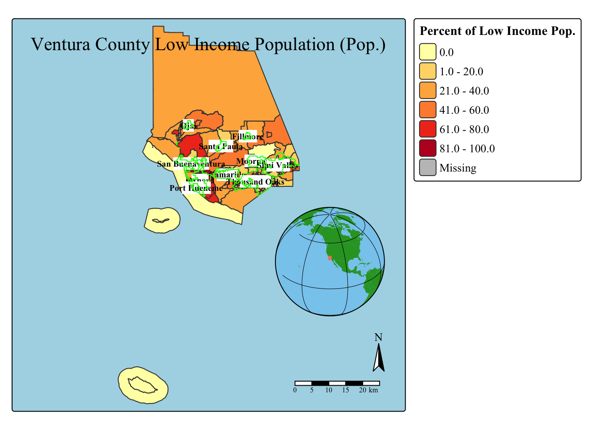

# Loading in packageslibrary(tidyverse)library(sf)library(here)library(dplyr)library(tmap)# read in geodatabase of EJScreen data at the Census Block Group level and cities.ejscreen <- sf::st_read(here::here("data", "ejscreen","EJSCREEN_2023_BG_StatePct_with_AS_CNMI_GU_VI.gdb"))
Reading layer `EJSCREEN_StatePctiles_with_AS_CNMI_GU_VI' from data source
`/Users/marietolteca/Documents/MEDS/EDS223-HW/EDS223-HW1/data/ejscreen/EJSCREEN_2023_BG_StatePct_with_AS_CNMI_GU_VI.gdb'
using driver `OpenFileGDB'
Simple feature collection with 243021 features and 223 fields
Geometry type: MULTIPOLYGON
Dimension: XY
Bounding box: xmin: -19951910 ymin: -1617130 xmax: 16259830 ymax: 11554350
Projected CRS: WGS 84 / Pseudo-Mercator
Reading layer `City_Boundary' from data source
`/Users/marietolteca/Documents/MEDS/EDS223-HW/EDS223-HW1/data/City_Boundary/City_Boundary.shp'
using driver `ESRI Shapefile'
Simple feature collection with 10 features and 11 fields
Geometry type: MULTIPOLYGON
Dimension: XY
Bounding box: xmin: 6162344 ymin: 1867837 xmax: 6370545 ymax: 1996012
Projected CRS: NAD83 / California zone 5 (ftUS)
# filter to a state you are interested incalifornia <- ejscreen %>% dplyr::filter(ST_ABBREV =="CA") # filter to a county you are interested inventura <- ejscreen %>% dplyr::filter(CNTY_NAME %in%c("Ventura County"))# find the average values for all variables within countiescalifornia_counties <-aggregate(california, by =list(california$CNTY_NAME), FUN = mean)# tried 'drop_na()' but mapping didn't work '
# #filter to a state you are interested in# oregon <- ejscreen %>%# dplyr::filter(st_abbrev == "OR")# # # filter to a county you are interested in# harney <- ejscreen %>%# dplyr::filter(cnty_name %in% c("Harney County"))# # #Check it exist# #Harney <- subset(ejscreen, state_name == 'Oregon' & cnty_name == 'Harney County')# # # find the average values for all variables within counties# oregon_counties <- aggregate(oregon, by = list(oregon$cnty_name), FUN = mean)
Map 1: Low-income population
# Name of map- using ventura dataventura_low <-tm_shape(ventura) +# Using low income varibaletm_polygons("P_LOWINCPCT",# adding titletitle ="Percent of Low Income Pop.",# color palette that shows percentile low incomepalette ="YlOrRd",# style for legend numbersstyle ="pretty") +tm_layout(title ="Ventura County Low Income Population (Pop.)",# background color on mapbg.color ="lightblue",# size of map (portrait, landscape, etc.)asp =1,# Bold letters on legendlegend.title.fontface =2,#Changing font typetext.fontfamily ="Times New Roman",# text sizelegend.text.size =0.8)+tm_shape(cities) +# Looks better when in interactive modetm_text("city_name",# making letters boldfontface ="bold",# size of letterssize =0.6,# background label bgcol ="white") +# does not work in interactive mode#changing the border color of the citiestm_borders(col ="green",# size of line/bordersize=0.5)+# adding minimaptm_minimap()+tm_layout(#position of mini globeattr.position =c("right", "bottom"))+# adding compasstm_compass()+# adding scale bartm_scalebar()
[v3->v4] `tm_polygons()`: instead of `style = "pretty"`, use fill.scale =
`tm_scale_intervals()`.
ℹ Migrate the argument(s) 'style', 'palette' (rename to 'values') to
'tm_scale_intervals(<HERE>)'
[v3->v4] `tm_polygons()`: migrate the argument(s) related to the legend of the
visual variable `fill` namely 'title' to 'fill.legend = tm_legend(<HERE>)'
[v3->v4] `tm_layout()`: use `tm_title()` instead of `tm_layout(title = )`
[tm_borders()] Argument `size` unknown.
# Printing mapprint(ventura_low)
[cols4all] color palettes: use palettes from the R package cols4all. Run
`cols4all::c4a_gui()` to explore them. The old palette name "YlOrRd" is named
"brewer.yl_or_rd"
Multiple palettes called "yl_or_rd" found: "brewer.yl_or_rd", "matplotlib.yl_or_rd". The first one, "brewer.yl_or_rd", is returned.
[tip] Consider a suitable map projection, e.g. by adding `+ tm_crs("auto")`.

# Saving Map to figs foldertmap_save(ventura_low, here("figs", "ventura_low.jpeg"))
[cols4all] color palettes: use palettes from the R package cols4all. Run
`cols4all::c4a_gui()` to explore them. The old palette name "YlOrRd" is named
"brewer.yl_or_rd"
Multiple palettes called "yl_or_rd" found: "brewer.yl_or_rd", "matplotlib.yl_or_rd". The first one, "brewer.yl_or_rd", is returned.
[cols4all] color palettes: use palettes from the R package cols4all. Run
`cols4all::c4a_gui()` to explore them. The old palette name "YlOrRd" is named
"brewer.yl_or_rd"
Multiple palettes called "yl_or_rd" found: "brewer.yl_or_rd", "matplotlib.yl_or_rd". The first one, "brewer.yl_or_rd", is returned.
Map saved to /Users/marietolteca/Documents/MEDS/EDS223-HW/EDS223-HW1/figs/ventura_low.jpeg
Resolution: 2100 by 2100 pixels
Size: 7 by 7 inches (300 dpi)
Making Map Interactive
tmap_mode("view")
ℹ tmap modes "plot" - "view"
ℹ toggle with `tmap::ttm()`
Removing Interactive Map. Turning into plot
tmap_mode("plot")
ℹ tmap modes "plot" - "view"
Map 2: PM2.5 levels
ventura_pm25 <-# Using particulate matter varibaletm_shape(ventura)+tm_polygons("PM25",title ="Particulate Matter 2.5 Per County",palette ="Pastel1",style ="pretty") +tm_layout(title ="Particulate Matter 2.5 in Ventura County",# background color on mapbg.color ="lightgrey",# size of map (portrait, landscape, etc.)asp =1,# Bold letters on legendlegend.title.fontface =2,#Changing font typetext.fontfamily ="Times New Roman",# text sizelegend.text.size =1)+#tm_minimap()+tm_compass()+tm_scalebar()
[v3->v4] `tm_polygons()`: instead of `style = "pretty"`, use fill.scale =
`tm_scale_intervals()`.
ℹ Migrate the argument(s) 'style', 'palette' (rename to 'values') to
'tm_scale_intervals(<HERE>)'
[v3->v4] `tm_polygons()`: migrate the argument(s) related to the legend of the
visual variable `fill` namely 'title' to 'fill.legend = tm_legend(<HERE>)'
[v3->v4] `tm_layout()`: use `tm_title()` instead of `tm_layout(title = )`
ventura_pm25
[cols4all] color palettes: use palettes from the R package cols4all. Run
`cols4all::c4a_gui()` to explore them. The old palette name "Pastel1" is named
"brewer.pastel1"
Multiple palettes called "pastel1" found: "brewer.pastel1", "hcl.pastel1". The first one, "brewer.pastel1", is returned.
[cols4all] color palettes: use palettes from the R package cols4all. Run
`cols4all::c4a_gui()` to explore them. The old palette name "Pastel1" is named
"brewer.pastel1"
Multiple palettes called "pastel1" found: "brewer.pastel1", "hcl.pastel1". The first one, "brewer.pastel1", is returned.
[cols4all] color palettes: use palettes from the R package cols4all. Run
`cols4all::c4a_gui()` to explore them. The old palette name "Pastel1" is named
"brewer.pastel1"
Multiple palettes called "pastel1" found: "brewer.pastel1", "hcl.pastel1". The first one, "brewer.pastel1", is returned.
Map saved to /Users/marietolteca/Documents/MEDS/EDS223-HW/EDS223-HW1/figs/ventura_pm25.jpeg
Resolution: 2100 by 2100 pixels
Size: 7 by 7 inches (300 dpi)
Interpretation: Low-Income: For my interpretation of the percentile for low income, it is evident that in the Oxnard Plain areas (Oxnard, San Buenaventura, and Port Hueneme) and Santa Paula, have a bigger Percentile of Low Income population. This could be because of the type of jobs around these areas, agriculture fields, and construction. Majority of this area consist of the 101- Freeway that means these lower income communities get hit with a big part of particulate matter. Personally, I grew up around these areas, in particular North Oxnard, where it has undergone gentrification and continues to go.
Particulate Matter 2.5: With the increase of streets, homes, schools, and roads I assumed the increase of particulate matter would come into play. In addition to the increase of particulate matter 2.5 Ventura County has been recently affect with a rise in wildfires. Wildfires have increased within the last few years mostly in the mountains where dry areas are common, as well as dry river beds with invasive species. In Ventura County the low income population seems to be exposed to more air pollution, showcasing an environmental injustice to certain residents.
[cols4all] color palettes: use palettes from the R package cols4all. Run
`cols4all::c4a_gui()` to explore them. The old palette name "YlOrRd" is named
"brewer.yl_or_rd"
Multiple palettes called "yl_or_rd" found: "brewer.yl_or_rd", "matplotlib.yl_or_rd". The first one, "brewer.yl_or_rd", is returned.
[plot mode] fit legend/component: Some legend items or map compoments do not
fit well, and are therefore rescaled.
ℹ Set the tmap option `component.autoscale = FALSE` to disable rescaling.
[cols4all] color palettes: use palettes from the R package cols4all. Run
`cols4all::c4a_gui()` to explore them. The old palette name "Pastel1" is named
"brewer.pastel1"
Multiple palettes called "pastel1" found: "brewer.pastel1", "hcl.pastel1". The first one, "brewer.pastel1", is returned.
[plot mode] fit legend/component: Some legend items or map compoments do not
fit well, and are therefore rescaled.
ℹ Set the tmap option `component.autoscale = FALSE` to disable rescaling.
For Fun - The State of California Low-Income Population and Air toxics of Cancer Risk in California
Interesting how most of the central valley and surrounding areas have a higher percent of air toxic cancer risk than anywhere else in the state of California. I have a hypothesis of why that might be, the central valley is known to have lots of agriculture fields. It is one of the highest producers throughout California, the pesticides that the agriculture needs might have an affect towards these communities.
# Printing only the state of CaliforniaCA_Low_Income <-tm_shape(california_counties) +# Showcasing Low - income across Californiatm_polygons("P_LOWINCPCT", # Defines how to plot the objecttitle ="Percent of Low - Income - Population",palette ="pink") +tm_symbols(size ="CANCER",shape =2,size.legend =tm_legend(orientation ="portrait",title ="Air toxics Cancer Risk (per County)"),col ="deepskyblue2")+#tm_borders() +tm_shape(ventura) +tm_lines()+tm_scalebar(position =c("left", "bottom"))+tm_compass(position =c("right", "top")) +tm_minimap(position =c("right","top"))
[v3->v4] `tm_tm_polygons()`: migrate the argument(s) related to the scale of
the visual variable `fill` namely 'palette' (rename to 'values') to fill.scale
= tm_scale(<HERE>).
[v3->v4] `tm_polygons()`: migrate the argument(s) related to the legend of the
visual variable `fill` namely 'title' to 'fill.legend = tm_legend(<HERE>)'
[plot mode] legend/component: Some components or legends are too "wide" and are
therefore rescaled.
ℹ Set the tmap option `component.autoscale = FALSE` to disable rescaling.
Map saved to /Users/marietolteca/Documents/MEDS/EDS223-HW/EDS223-HW1/figs/CA_lowincome.jpeg
Resolution: 1955.023 by 2255.728 pixels
Size: 6.516744 by 7.519092 inches (300 dpi)